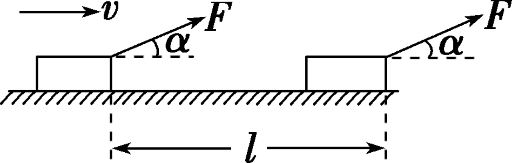
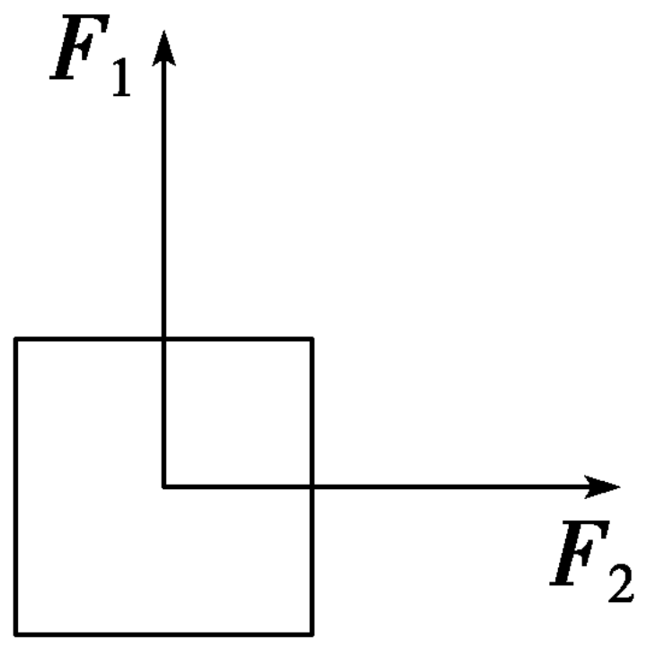
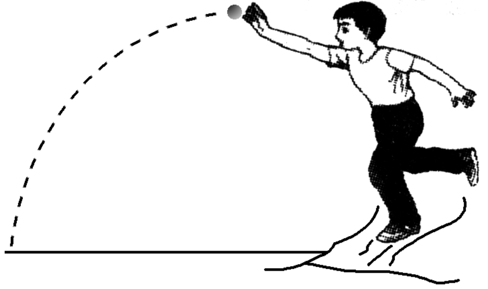
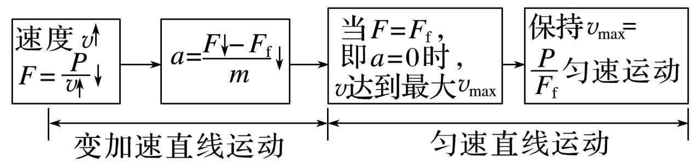
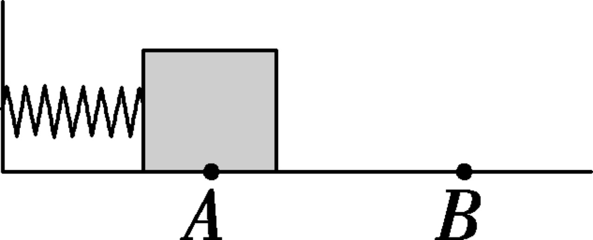
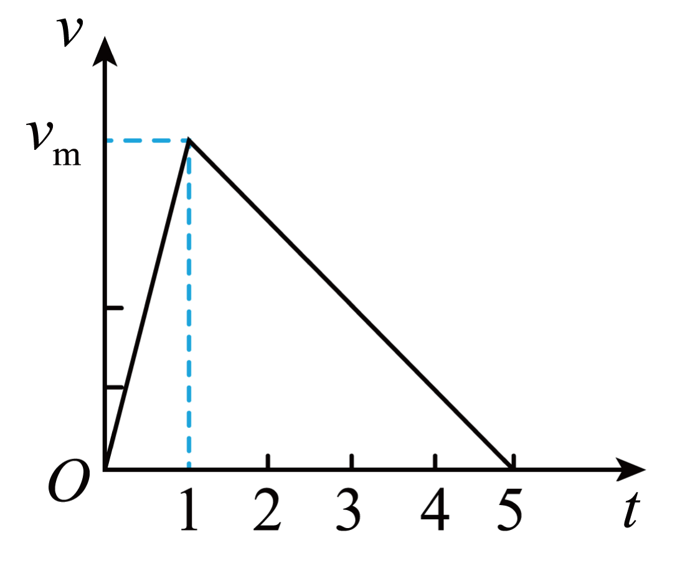
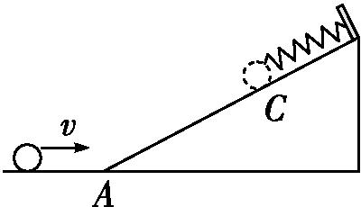
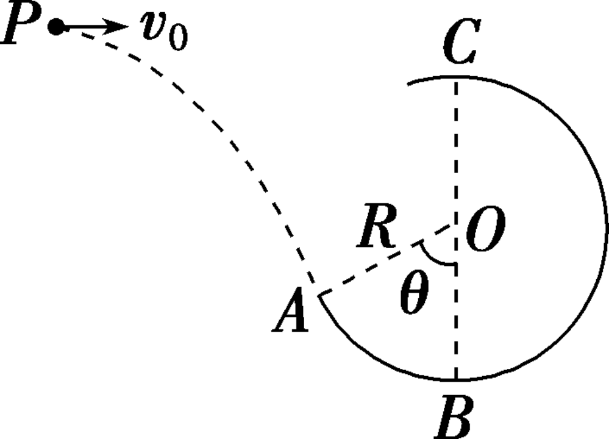
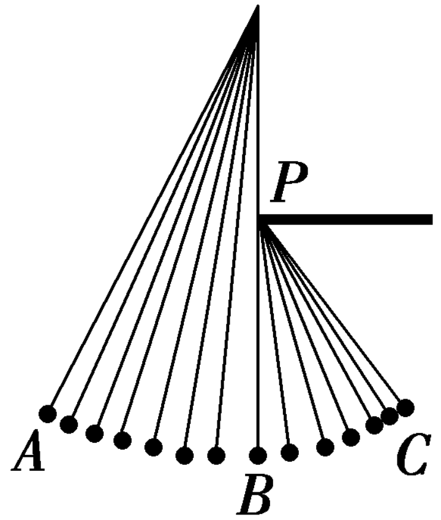
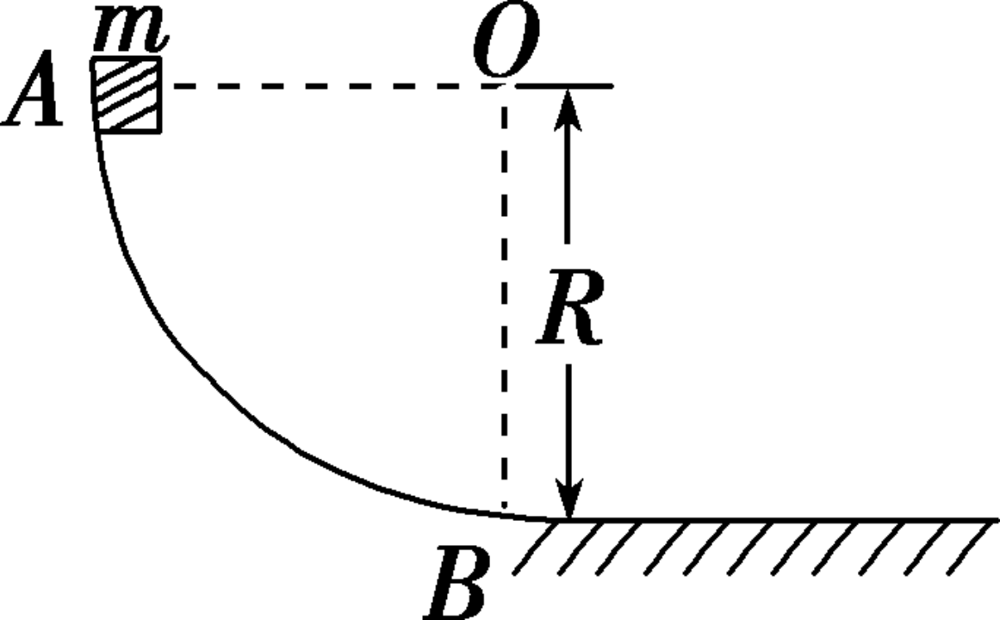

学考14-机械能守恒定律
功和功率
功
功的概念
- 物理意义：功是能量转化的量度
- 定义式：W=Fl\cos\alpha

- \alpha 是力与位移方向之间的夹角 (如图所示)，l 为物体对地的位移；
- 该公式只适用于恒力做功。
练习
如图所示，小郑同学正在垫排球。排球离开手臂后先竖直向上运动，再落回原位置，则此过程中 ( A )
A. 重力对排球所做总功为零
B. 空气阻力对排球所做总功为零
C. 重力对排球先做正功再做负功
D. 空气阻力对排球先做正功再做负功
多个力做功
多个力做功的两次计算方法
W_{合}= \begin{cases} F_\text{合}l\cos\alpha \\ W_1+W_2+W_3+\cdots \end{cases}
练习
如图所示，物体在两个相互垂直的恒力 F_1 和 F_2 作用下通过一段距离。此过程中，力 F_1 做功 4 \;\mathrm{J}，力 F_2 做功 3 \;\mathrm{J}，则这两个力的合力对物体做功为 7\;\mathrm{J}

功率
- 定义：力做的功 W 与完成这些功所用时间 t 之比叫作功率
- 物理意义：描述力对物体做功的快慢
- 公式：
- 定义式：P=\frac{W}{t}
- 变式：P=Fv\cos \alpha
- 额定功率：机械正常工作时的最大功率
- 实际功率：机械实际工作时的功率，要求不能大于额定功率
练习
我国高铁技术处于世界领先水平，和谐号动车组是由动车和拖车编组而成，提供动力的车厢叫动车，不提供动力的车厢叫拖车。假设动车组各车厢的质量均相等，动车的额定功率都相同，动车组在水平直轨道上运行过程中所受阻力与所受重力成正比。某动车组由 6 节动车加 2 节拖车编成，该动车组的最大速度为 v，则 1 节动车和 1 节拖车编成的动车组的最大速度为 \frac{2}{3}v
练习
从空中以 40 \;\mathrm{m / s} 的初速度平抛一重为 10 \;\mathrm{N} 的物体，物体在空中运动 3 \;\mathrm{s} 落地，不计空气阻力，g 取 10 \;\mathrm{m /s^{2}}，则物体落地前瞬间，重力的瞬时功率为 300\;\mathrm{W}

机车启动问题
\begin{cases} F-f=ma \\ P=Fv \end{cases}
以恒定功率启动

练习
汽车上坡时，司机一般都将变速挡换到低速挡位上，这样做主要是为了 ( B )
A. 节省燃料
B. 使汽车获得较大的牵引力
C. 使汽车获得较大的功率
D. 避免因车速过大而发生危险
练习
质量为 2.5 \;\mathrm{t} 的汽车，发动机的额定功率为 30 \;\mathrm{kW}，在水平路面上能以 20 \;\mathrm{m /s^{2}} 的最大速度匀速行驶，则汽车在该水平路面行驶时所受的阻力为 1.5\times 10^{3}\;\mathrm{N}
以恒定加速度启动
由牛顿第二定律 F-f=ma，a 恒定，则 F 恒定，速度 v 变大，由 P=Fv 知功率增大，当功率增大到额定功率时，F>f，a\neq 0，v 增大，则 F 减小，a 减小，v 增大，当 F=f 时速度达到最大。
练习
一质量为 4.0×10^3\; kg，发动机额定功率为 60 kW 的汽车从静止开始以 a=0.5\;m /s^2 的加速度做匀加速直线运动后以额定功率运动，它在水平面上运动时所受阻力为车重的 0.1 倍，g 取 10\;m / s^2 ，求：
- 汽车起动后 4 s 末发动机的输出功率；
- 汽车以 0.5\;m ⁄s^2 的加速度做匀加速运动所能行驶的时间；
- 汽车在此路面上所能行驶的最大速度；
- 汽车若以额定功率从静止启动时，当速度达到 6\;m/s 时其加速度大小
问题 1
\begin{aligned} &v_{1}=at_{1}=2\,m /s \\ &F-kmg=ma\Rightarrow F=m(a+kg)=6\times 10^{3}\,N \\ &P_{1}=Fv_{1}=1.2\times 10^{4}\,W \end{aligned}
问题 2
\begin{aligned} &v_{2}=\frac{P}{F}=10\,m /s \\ &t=\frac{v_{2}}{a}=20\,s \end{aligned}
问题 3
v_{m}=\frac{P}{kmg}=15\,m /s
问题 4
\begin{aligned} &F'=\frac{P}{v'}=1\times 10^{4}\,N \\ &F'-kmg=ma \Rightarrow a=1.5\,m /s \end{aligned}
重力势能和弹性势能
重力势能
动能和动能定理
动能
- 表达式：E_k=\frac{1}{2}mv^2
- 单位：焦耳，符号 J
- 标矢性：标量
动能定理
- 表达式：W=\Delta E_{k}
- 意义：动能变化的量（增量）总对应合力做的功。
练习
如图所示，左端固定的轻质弹簧被物块压缩，物块被释放后，由静止开始从 A 点沿粗糙水平面向右运动。离开弹簧后，经过 B 点的动能为 E_k，该过程中，弹簧对物块做的功为 W，求摩擦力对物块做的功 W_{f}。

如果问题改成求物块克服摩擦力做功，应该怎么列等式？
例如：
- 问摩擦力做功，直接根据合力做功等于分力做功列动能定理：
W_{弹}+W_{f}=\Delta E_{k}
- 问克服摩擦力做功用 (-W_{克}) 代替 W_{f} 列式：
W_{弹}+(-W_{克})=\Delta E_{k}
用动能定理解决多过程问题
\begin{cases} W_{1}=E_{k 2}-E_{k 1} \\ W_{2}=E_{k 3}-E_{k 2} \\ \dots \\ W_{n}=E_{k (n+1)}-E_{k n} \end{cases} \Rightarrow W_{1}+W_{2}+\dots+W_{n}=\Delta E_{k}
练习
汽车在平直的公路上从静止开始做匀加速运动，当汽车速度达到 v_m 时关闭发动机，汽车继续滑行了一段时间后停止运动，其运动的速度图像如上图所示. 若汽车加速行驶时其牵引力做功为 W_1，汽车整个运动中克服阻力做功等于 W_2，求：
- W_{1} 与 W_{2} 的比值；
- 牵引力和阻力大小之比。

- W_{1}-W_{2}=0\Rightarrow \frac{W_{1}}{W_{2}}=1
- F\cdot l_{1}-f\cdot l_{2}=0\Rightarrow \frac{F}{f}=\frac{l_{2}}{l_{1}}=5
练习
如图所示, 光滑斜面的顶端固定一弹簧, 一质量为 m 的小球向右滑行, 并冲上固定在水平地面上的斜面。设小球在斜面最低点 A 的速度为 v, 压缩弹簧至 C 点时弹簧最短, C 点距地面高度为 h, 重力加速度为 g, 则从 A 到 C 的过程中弹簧弹力做的功是？

-mgh+W_{弹}=0-\frac{1}{2}mv^{2}\Rightarrow W_{弹}=mgh-\frac{1}{2}mv^{2}
结合动能定理后，我们对运动学的研究范围扩大了
| 运动学方程 | 动能定理 |
|---|---|
| 恒力做功 | 变力做功 |
| 直线运动 | 曲线运动 |
| 单一过程 | 多过程 |
练习
如图，一个质量为 0.5 \;\mathrm{kg} 的小球以某一初速度从 P 点水平抛出，恰好从圆弧轨道 ABC 的 A 点的切线方向进入圆弧 (不计空气阻力，进入圆弧时无机械能损失)。已知圆弧的半径 R＝0.5 \;\mathrm{m}，O 为轨道圆心，BC 为轨道竖直直径，OA 与 OB 的夹角 \theta ＝53^{\circ}，小球到达 A 点时的速度 v_{A} ＝ 5 \;\mathrm{m / s}。G 取 10 \;\mathrm{m / s^{2}}。
- 求小球做平抛运动的初速度 v_0；
- 求 P 点与 A 点的高度差；
- 当小球恰好能够经过最高点 C 时，求此过程小球克服摩擦力所做的功。

问题 1
在 A 点分解速度，v_{0}=v_{A}\cos \theta=3 \;m /s
问题 2
\begin{cases} v_{0}=v_{A}\sin \theta \\ v_{y}^{2}=2gh \end{cases} \Rightarrow h=0.8 \;\mathrm{m}
问题 3
\begin{cases} W_{f}-mgR(1+\cos \theta)=\frac{1}{2}mv_{c}^{2}-\frac{1}{2}mv_{A}^{2} \\ mg=m\frac{v_{c}^{2}}{R} \end{cases} \Rightarrow W_{f}=-1\;\mathrm{J}
摩擦力做功 W_{f}=-1\;\mathrm{J}，故小球克服摩擦力做功 1\;\mathrm{J}
机械能守恒定律
机械能守恒的条件
- 机械能：重力势能、弹性势能与动能都是机械运动中的能量形式，统称为机械能，通过重力或弹力做功，机械能可以从一种形式转化成另一种形式。
- 机械能守恒定律：在只有重力或弹力做功的物体系统内，动能与势能可以相互转化，而总的机械能保持不变。
- 机械能守恒的三类常见情况
- 从受力角度看：只受重力、系统内相互作用的弹力，不受其他力。
- 从做功角度看：除重力、系统内相互作用的弹力外，其他力都不做功。
- 从能量转化看：只有系统内的重力势能、弹性势能、动能之间的转化，既没有系统外物体与系统内物体间能量转化或转移，也没有除机械能外其他能量参与转化。
练习
如图所示，用细线悬挂的小球从点 A 开始摆动，经过最低点 B 时摆线被直尺 P 挡住，球继续摆动至 C 点。不计空气阻力，下列说法正确的是
A. A 到 B 过程小球的机械能增加
B. B 到 C 过程小球的机械能减少
C. A 到 C 过程小球的机械能守恒
D. A 到 C 过程小球的机械能增加

机械能守恒的应用
常用的三种表达式
- 守恒式：E_{1}=E_{2}
- 转化式：\Delta E_{k}=-\Delta E_{p}
- 转移式：\Delta E_{A}=-\Delta E_{B}
练习
如图，AB 是竖直面内的四分之一圆弧形光滑轨道，下端 B 点与水平直轨道相切。一个小物块自 A 点由静止开始沿轨道下滑，已知轨道半径为 R＝0.2 m，小物块的质量为 m＝0.1 kg，小物块与水平面间的动摩擦因数 \mu ＝0.5，g 取 10 m / s^2。求：
- 以地面为参考面，物块在 A 点的重力势能；
- 小物块滑到 B 点时的速度大小；
- 小物块在水平面上滑动的最大距离。
